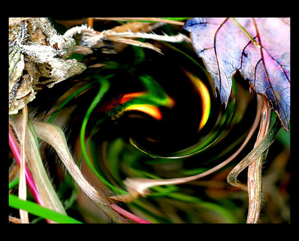

A Gust Ago
by Henry Quince

The twelve triangles of the cherub wind
Engraving going. —Dylan Thomas
A gust ago,
Rose quarters thirded while a city slept,
With only a blown coin’s clink for mother,
A wind of now,
Sly in its angle, deftly, silently slipped,
Breeze interloper,
In behind the dozing compass keeper
To puff the weather.
This prentice point,
Tucked in the squirrel eye of tempest and squall,
Fortuitous, ill-omened, unsuspected,
Goes where it went
Last Friday at ten when the great moon was full,
A riddle the delve
Of gauge and telescope is dumb to resolve
As chance or constructed.
Down to the dingle
Leans in his list Boreas’ bastard son,
Rime of the ruthless ice floe on his breath,
Thirteenth triangle
Claimed for his own by the foolish cuckold moon,
Friend of lovers
Of superstition and of gone engravers,
Huffed with an oath.
Who then is he,
He shaking me? An exhalation driving
Drives out the cousins from the Kaisered tower;
The roots of sigh
Sigh all his seed with his roar’s long arriving,
That he the swirled,
The ice-forgetter current, long-impelled,
Be the grim blower.
The dark draws in,
A slough of lye that leaps us, time and caustic;
I tell you this; before the wind of change
Wafts you his warning,
Box up your dead; with schemes adroit, artistic,
Enshroud the quick;
So cross his palm with silver, wish them luck,
And swear revenge.
 |